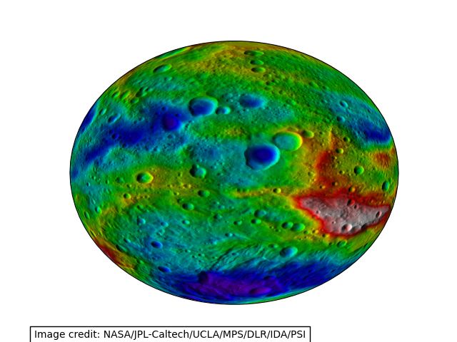

Note
Go to the end to download the full example code
Displaying data on an eccentric ellipse#
This example demonstrates plotting data on an eccentric ellipse. The data plotted is a topography map of the asteroid Vesta. The map is actually an image, which is defined on an equirectangluar projection relative to an ellipse with a semi-major axis of 285 km and a semi-minor axis of 229 km. The image is reprojected on-the-fly onto a geostationary projection with matching eccentricity.
from io import BytesIO
from urllib.request import urlopen
from PIL import Image
import matplotlib.pyplot as plt
import numpy as np
import cartopy.crs as ccrs
def vesta_image():
"""
Return an image of Vesta's topography.
Image credit: NASA/JPL-Caltech/UCLA/MPS/DLR/IDA/PSI
Returns
-------
img : numpy array
The pixels of the image in a numpy array.
img_proj : cartopy CRS
The rectangular coordinate system of the image.
img_extent : tuple of floats
The extent of the image ``(x0, y0, x1, y1)`` referenced in
the ``img_proj`` coordinate system.
"""
url = 'https://www.nasa.gov/sites/default/files/pia17037.jpg'
img_handle = BytesIO(urlopen(url).read())
raw_image = Image.open(img_handle)
# The image is extremely high-resolution, which takes a long time to
# plot. Sub-sampling reduces the time taken to plot while not
# significantly altering the integrity of the result.
smaller_image = raw_image.resize([raw_image.size[0] // 10,
raw_image.size[1] // 10])
img = np.asarray(smaller_image)
# We define the semimajor and semiminor axes, but must also tell the
# globe not to use the WGS84 ellipse, which is its default behaviour.
img_globe = ccrs.Globe(semimajor_axis=285000., semiminor_axis=229000.,
ellipse=None)
img_proj = ccrs.PlateCarree(globe=img_globe)
img_extent = (-180, 180,
-90, 90)
return img, img_globe, img_proj, img_extent
def main():
img, globe, crs, extent = vesta_image()
projection = ccrs.Geostationary(globe=globe)
fig = plt.figure()
ax = fig.add_subplot(1, 1, 1, projection=projection)
ax.imshow(img, transform=crs, extent=extent)
fig.text(.075, .012, "Image credit: NASA/JPL-Caltech/UCLA/MPS/DLR/IDA/PSI",
bbox={'facecolor': 'w', 'edgecolor': 'k'})
plt.show()
if __name__ == '__main__':
main()
Total running time of the script: ( 0 minutes 3.105 seconds)